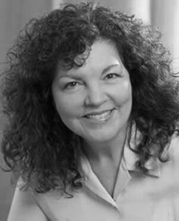
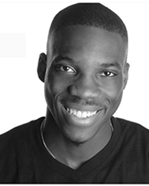
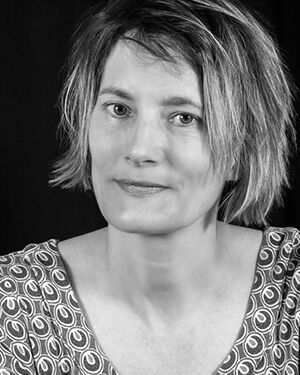
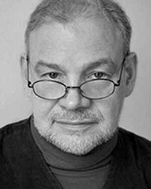
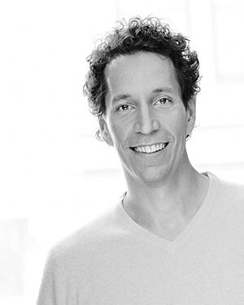
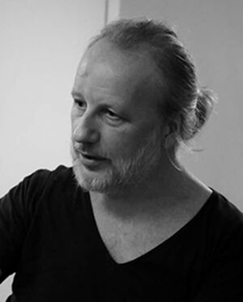
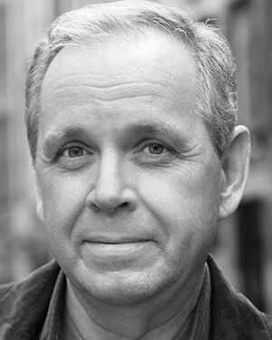
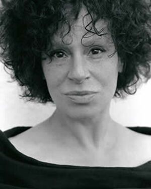

DAWN ARNOLD

founder and Artistic Director of The Moving Dock Theatre Company
and Chekhov Studio Chicago. Dawn is a teacher of the Chekhov Technique,
trained by the Michael Chekhov Association (MICHA). She appears
in the documentary, Master Classes in the Michael Chekhov Technique,
produced by the Michael Chekhov Association. She has been on the
faculty of Roosevelt University’s Theatre Conservatory, Music
Institute of Chicago, Northern Illinois University, and The
Theatre School at DePaul. She is currently on the Faculty of
the Michael Chekhov Association and the Michael Chekhov Acting Studio New York City, Chekhov Studio Chicago, and Lyric Opera of Chicago's Patrick G. and Shirley W. Ryan Opera Center. She is a guest artist around the country in workshops and residencies for colleges, high schools, and theatre companies. As a movement director and rehearsal coach, she has worked with Vitalist Theatre, Porchlight Music Theatre, House Theatre, and Janus Theatre and coaches actors working for Chicago Shakespeare Theater, Lookingglass Theatre, Goodman Theatre,
and Court Theatre among others, and opera singers at Lyric
Opera Chicago's Patrick G. and Shirley W. Ryan Opera Center.
AKIL APOLLO DAVIS

Performing Artist and Theater Teacher based in NYC. Akil teaches
and develops a rare form or masks and movement. The former
apprentice and on-going collaborator of celebrated mask teacher
Per Brahe. Akil’s movement coaching is further informed in
his extensive training in Balinese dance, Thai Classical dance,
Modern dance, Butoh, African, Ballet, Jazz, Kabuki, and Noh.
Akil has taught Theatre and Dance all over America, in over
seven countries, regularly returning to Bali and Thailand,
and has taught Mask and Art Aesthetic at NYU and SUNY Purchase.
An alumni of NYC TISCH School of the Arts, Founder and
Artistic Director of the new performance company LOUDSOL,
and Megastar Finalist.
MELANIA LEVISTKY

Melania Levitsky is the Artistic Director of Nikita Productions,
and the Associate Artistic Director of Walking the dog Theater Company
Inc. She directs the Shakespeare in the Valley Festival every summer
in upstate NY. She trained in the Michael Chekhov acting technique with
Ted Pugh and Fern Sloan and was a member of The Actors’ Ensemble for 20
years, and is one of the founding members of the Tennessee Shakespeare Company.
She is certified in Level 1 Spacial Dynamics and Bothmer Gymnastics and is
trained in the Werbeck singing technique. She has taught in the U.S.,
The Netherlands and South Africa. She is currently completing a recording
of original songs with a partner in Amsterdam, a children’s book based on a
Kazakh folk tale called, The Gold in the Ground, and recently began creating
custom sculpture portraits. She believes all art forms are a melding of truth,
fantasy, movement, danger and love.
JAMES LUSE

Actor, director, and teacher based in CT. James has an MFA in
Theatre Arts from Brandeis University and studied at the Michael
Chekhov Acting Studio in NYC, The International Michael Chekhov
Conference and The Baikal Theatre School, Irkusk, USSR. James
has been a Master Teacher of Acting at Yale & Wesleyan Universities,
the Head of Acting at the Broadway Theatre Project, and a
Michael Chekhov specialist at THE NATIONAL THEATRE INSTITUTE.
He has also taught at the Theatre Faculties of WAYNE STATE University,
The College of William and Mary, NYU, The American Academy of
Dramatic Arts, The Berkshire Theatre Festival, The Virginia
Stage Company, Northern Michigan University, Hampton University,
The Virginia Shakespeare Festival, and the Long Wharf Theatre.
James Luse has directed over 600 productions in regional, stock
and academic theatre. He has acted regionally at the Walking
the Dog Theatre/Nikita Productions, ADVICE TO THE PLAYERS, INC.
(NH), Virginia Shakespeare Festival, Bristol Riverside Theatre,
Jenny Wiley Theatre, Virginia Stage Company, The International
Stanislavski Theatre Studio, Yale University, Long Wharf, Shakespeare
on the Sound, the Generic Theatre(VA), and in NYC at HERE,
The ARCLIGHT THEATRE, Gorilla Repertory Co., Circle East,
The Hunger and Thirst Theatre Collective, A>N>O>N>Productions,
and at NYU. In New York City, Luse has performed major roles
at The Gallery Players, The Michael Chekhov Acting Studio &
Theatre Festival, and at The Metropolitan Playhouse. He has
played in UNCLE VANYA as Vanya for the Torn Space Theatre in Buffalo, NY.
SCOTT MILLER

Having spent forty years as a coach, trainer and teacher,
Scott blends a lifetime of exceptional experience into his
work with others. His diverse life paths include two sports
at the professional level, a law degree from George Washington
University, clerking at DC’s Public Defender Service, time as
a producer, actor, director, a trainer of lead teachers. He
has been, for the last fifteen years, a Professor at NYU Tisch’s
elite Graduate Acting Program. He is the founder of the Miller
Voice Method® and through decades of field and scientific research
has developed a transformational and repeatable way to embody
presence and empathy for peak performances that sustain both
the audience’s and speaker’s attention.
HUGO MOSS

Born in the U.K. and half Irish, has lived in Brazil for nearly
30 years. Recognizing how little Michael Chekhovs artistic legacy
was known in Brazil, Michael Chekhov Brasil was founded in 2010
by Hugo Moss and Brazilian actor Thaís Loureiro with the mission
to fill the gap in the country’s theatre education and practice.
Trained by MICHA, Hugo is an active member of the international
Michael Chekhov community and is director of Grupo Assik's acclaimed
2014 production of 'night, Mother, by Marsha Norman. He has
recently been assisting Jessica Cerullo in editing sections of
Deirdre Hurst du Prey's archive for MICHA's 2017 edition of
"Lessons for Teachers", and in 2016 was appointed Visiting
Professor at the University of Campinas to introduce the Michael
Chekhov technique to graduate, post-graduate students and
faculty members. He finds daily inspiration in the Alexander
Technique and Eurythmy and is fluent in Portuguese, German and French.
MEL SHRAWDER

Mel holds an M.F.A. at the University of Memphis. Headed the
performance program at the University of Miami for a number of
years where he received a faculty grant to study at the National
Theatre of Great Britain. He is a certified Reiki Master, and
as well as teaching the Michael Chekhov approach, Mel includes
in his present teaching Energize components based on RYSE work,
and character/personality transformation approaches based on
holistic means. Mel appeared in the new Michael Chekhov instructional
DVDs, and he has developed a one person show, Homefront, which
was presented at the International Michael Chekhov Festival at
Amherst under the direction of Lenard Petit. He’s a storyteller
as well performing his pieces at Tellabration, and has worked
with famed storyteller Jay Callahan. His piece Pax Vobiscum was
presented at the Michael Chekhov Studio, and he has recently
written two bookend plays centered around the Native American
experience at Carlisle. Mel has performed with the New York
Shakespeare Festival under the direction of Joseph Papp, and
has appeared at Arena Stage in Washington DC, Portland Stage,
and other regional theatres.
NATALIE YOLAN

Artistic director of Michael Chekhov Studio Brussels, Natalie
specializes in stage production and Russian theatrical pedagogies
from Moscow’s Gitis (the Russian Academy of Theatre Arts) and
the Vakhtanghov Institute; her teachers are Vladimir Skoritz,
Andrei Droznin, Boris Rabey, and Slava Kokorin. She has also
followed an intensive training program at the Michael Chekhov
Acting Studio in New York with Lenard Petit. Since 2003, she
has given many courses in Italy, Belgium, France and the United
States. She teaches at the Conservatoire de Liège and at the
Conservatoire de Roubaix, France, at the Samovar in Paris and
at the Michael Chekhov Acting Studio in New York. She also works
as a consultant for the City of Brussels for the ‘Dispositif
d’Accrochage Scolaire’. She stages the authors Victor Haïm,
Jean-Claude Grumberg, Joël Pommerat, Daniil Kharms and Anton
Tchekhov. She has collaborated with film director Boris Lehman,
and film directors and performance artists Vincent Matijn-Wallecan,
Patricia Martin, Marc Rossignol, Dominique Thirion, Angel Vergara,
Melanie Rullier, Anne-Cécile Vandalem, Alain Wathieu Boris Rabey,
Matthias Langhoff, Isabelle Pousseur, Slava Kokorin.